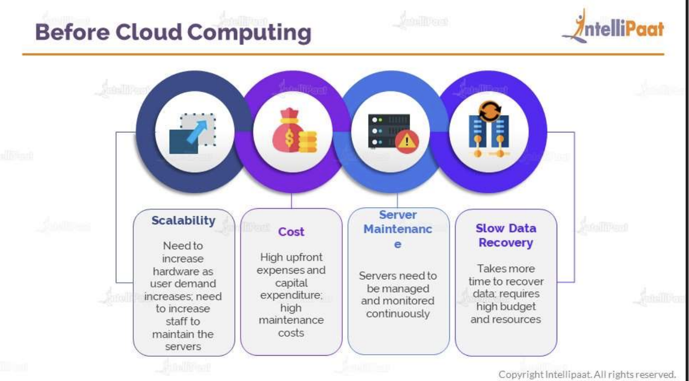

Before Cloud computing
- companies used to invest money to buy servers then launch application.
- as they they gain popularity on application, they need to invest more money to buy more servers.
however increase in load might crash servers.
- here company needs to make initial investment and then again hire maintainance team to fix broken servers.
this is an expensive option.
- As the load increases keeping extra servers and maintaining regularly adds to ur billing.
- following are the issues we have before cloud computing
